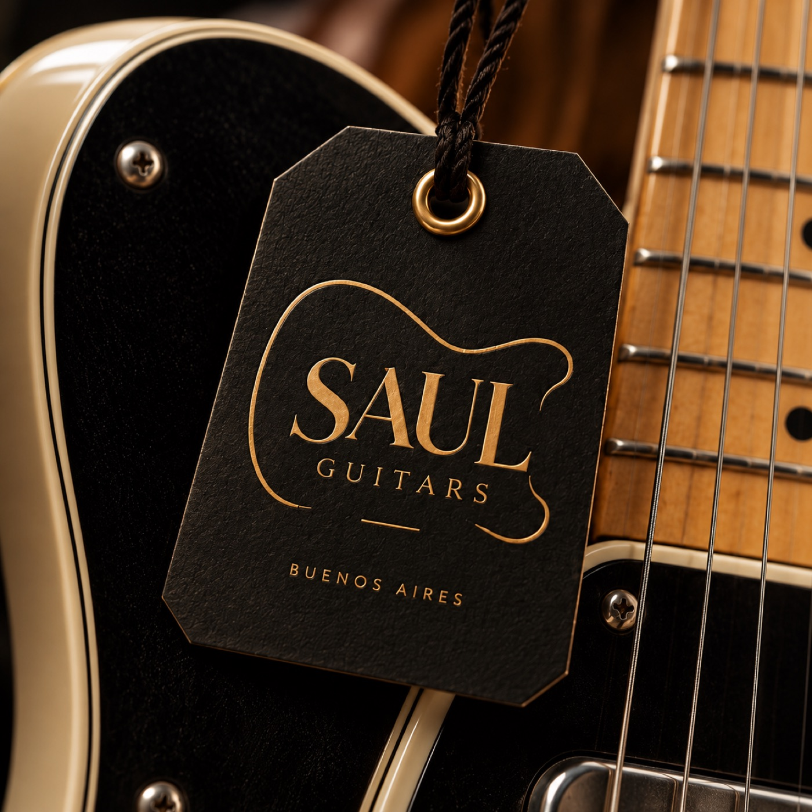
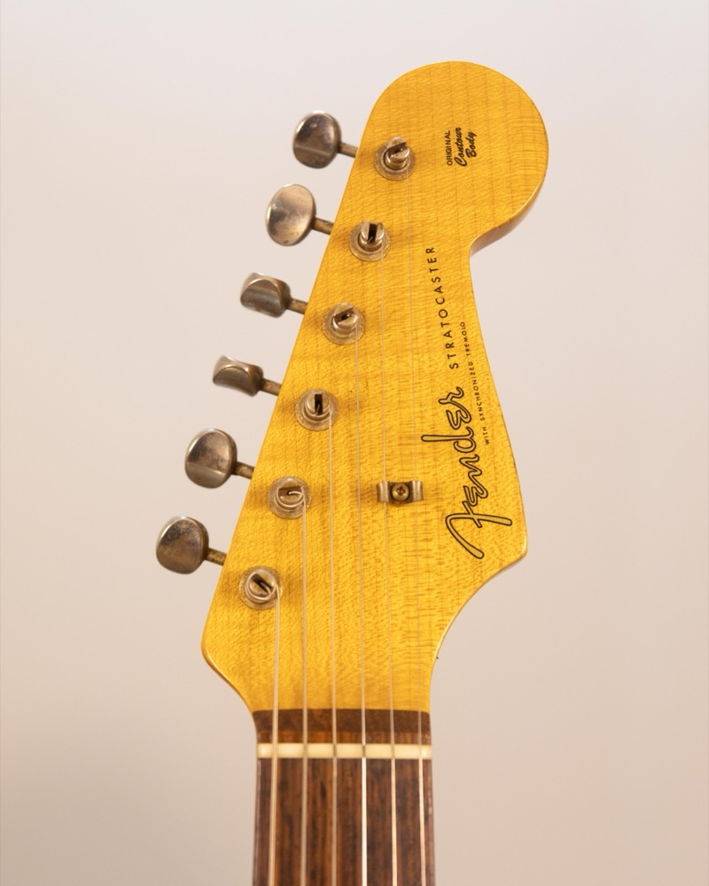

SAÚL GUITARS
Guitarras que dejan huella.
Instrumentos únicos, carácter auténtico. Una selección para quienes saben que una gran guitarra se siente desde el primer acorde.
PIEZAS SELECCIONADASCONSULTAS PERSONALIZADAS

EL SONIDO TIENE HISTORIA
Hay instrumentos que se miran. Y otros que te llaman a tocarlos.
Curaduría, pasión y buen sonido.EXPLORÁ EL STOCK
El catálogo.
Encontrá tu próximo instrumento. Cada pieza tiene su propia historia; escribinos para conocerla.
La próxima pieza puede estar en camino.
Esta categoría todavía no tiene productos publicados en la muestra. Consultanos por lo que estás buscando.
Hacer una consulta
MÁS QUE UN INSTRUMENTO
El próximo capítulo empieza en tus manos.
Desde una Stratocaster con historia hasta ese amplificador que siempre quisiste probar. Descubrí una colección pensada para músicos, coleccionistas y amantes del sonido.
Consultanos por una piezaHABLEMOS DE GUITARRAS
¿Encontraste la indicada?
Contanos qué instrumento te interesa y te respondemos personalmente con los detalles.
ESCRIBINOSguitarssaul@gmail.com
SEGUINOS@saulguitars
UBICACIÓN DE REFERENCIABuenos Aires, ArgentinaCoordinamos la visita por mensaje.
Ubicación de referencia · dirección exacta a confirmar
NOVEDADES